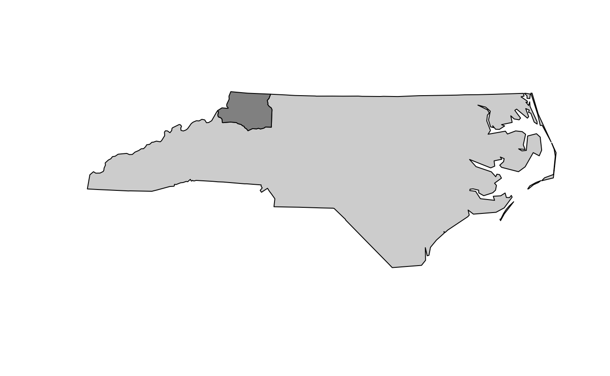

This vignetted describes how simple features, i.e. records that come with a geometry, can be manipulated, for the case where these manipulations involve geometries. Manipulations include:
- aggregating feature sets
- summarising feature sets
- joining two feature sets based on feature geometry
Features are represented by records in an sf object, and have feature attributes (all non-geometry fields) and feature geometry. Since sf objects are a subclass of data.frame or tbl_df, operations on feature attributes work identical to how they work on data.frames, e.g.
library(sf)
## Linking to GEOS 3.5.0, GDAL 2.2.2, PROJ 4.8.0
nc <- st_read(system.file("shape/nc.shp", package="sf"))
## Reading layer `nc' from data source `/tmp/RtmpdJlJZb/temp_libpath7d675cec0777/sf/shape/nc.shp' using driver `ESRI Shapefile'
## Simple feature collection with 100 features and 14 fields
## geometry type: MULTIPOLYGON
## dimension: XY
## bbox: xmin: -84.32385 ymin: 33.88199 xmax: -75.45698 ymax: 36.58965
## epsg (SRID): 4267
## proj4string: +proj=longlat +datum=NAD27 +no_defs
nc <- st_transform(nc, 2264)
nc[1,]
## Simple feature collection with 1 feature and 14 fields
## geometry type: MULTIPOLYGON
## dimension: XY
## bbox: xmin: 1193283 ymin: 913341.9 xmax: 1340555 ymax: 1044158
## epsg (SRID): 2264
## proj4string: +proj=lcc +lat_1=36.16666666666666 +lat_2=34.33333333333334 +lat_0=33.75 +lon_0=-79 +x_0=609601.2192024384 +y_0=0 +ellps=GRS80 +towgs84=0,0,0,0,0,0,0 +units=us-ft +no_defs
## AREA PERIMETER CNTY_ CNTY_ID NAME FIPS FIPSNO CRESS_ID BIR74 SID74 NWBIR74
## 1 0.114 1.442 1825 1825 Ashe 37009 37009 5 1091 1 10
## BIR79 SID79 NWBIR79 geometry
## 1 1364 0 19 MULTIPOLYGON (((1270814 913...prints the first record.
Many of the tidyverse/dplyr verbs have methods for sf objects. This means that given that both sf and dplyr are loaded, manipulations such as selecting a single attribute will return an sf object:
library(dplyr)
##
## Attaching package: 'dplyr'
## The following objects are masked from 'package:stats':
##
## filter, lag
## The following objects are masked from 'package:base':
##
## intersect, setdiff, setequal, union
nc %>% select(NWBIR74) %>% head(2)
## Simple feature collection with 2 features and 1 field
## geometry type: MULTIPOLYGON
## dimension: XY
## bbox: xmin: 1193283 ymin: 913341.9 xmax: 1441003 ymax: 1044158
## epsg (SRID): 2264
## proj4string: +proj=lcc +lat_1=36.16666666666666 +lat_2=34.33333333333334 +lat_0=33.75 +lon_0=-79 +x_0=609601.2192024384 +y_0=0 +ellps=GRS80 +towgs84=0,0,0,0,0,0,0 +units=us-ft +no_defs
## NWBIR74 geometry
## 1 10 MULTIPOLYGON (((1270814 913...
## 2 10 MULTIPOLYGON (((1340555 959...which implies that the geometry is sticky, and gets added automatically. If we want to drop geometry, we can coerce to data.frame first, this drops geometry list-columns:
Subsetting feature sets
We can subset feature sets by using the square bracket notation
nc[1, "NWBIR74"]
## Simple feature collection with 1 feature and 1 field
## geometry type: MULTIPOLYGON
## dimension: XY
## bbox: xmin: 1193283 ymin: 913341.9 xmax: 1340555 ymax: 1044158
## epsg (SRID): 2264
## proj4string: +proj=lcc +lat_1=36.16666666666666 +lat_2=34.33333333333334 +lat_0=33.75 +lon_0=-79 +x_0=609601.2192024384 +y_0=0 +ellps=GRS80 +towgs84=0,0,0,0,0,0,0 +units=us-ft +no_defs
## NWBIR74 geometry
## 1 10 MULTIPOLYGON (((1270814 913...and use the drop argument to drop geometries:
but we can also use a spatial object as the row selector, to select features that intersect with another spatial feature:
Ashe = nc[nc$NAME == "Ashe",]
class(Ashe)
## [1] "sf" "data.frame"
nc[Ashe,]
## Simple feature collection with 4 features and 14 fields
## geometry type: MULTIPOLYGON
## dimension: XY
## bbox: xmin: 1142157 ymin: 823092 xmax: 1448920 ymax: 1044158
## epsg (SRID): 2264
## proj4string: +proj=lcc +lat_1=36.16666666666666 +lat_2=34.33333333333334 +lat_0=33.75 +lon_0=-79 +x_0=609601.2192024384 +y_0=0 +ellps=GRS80 +towgs84=0,0,0,0,0,0,0 +units=us-ft +no_defs
## AREA PERIMETER CNTY_ CNTY_ID NAME FIPS FIPSNO CRESS_ID BIR74 SID74
## 1 0.114 1.442 1825 1825 Ashe 37009 37009 5 1091 1
## 2 0.061 1.231 1827 1827 Alleghany 37005 37005 3 487 0
## 18 0.199 1.984 1874 1874 Wilkes 37193 37193 97 3146 4
## 19 0.081 1.288 1880 1880 Watauga 37189 37189 95 1323 1
## NWBIR74 BIR79 SID79 NWBIR79 geometry
## 1 10 1364 0 19 MULTIPOLYGON (((1270814 913...
## 2 10 542 3 12 MULTIPOLYGON (((1340555 959...
## 18 200 3725 7 222 MULTIPOLYGON (((1402677 837...
## 19 17 1775 1 33 MULTIPOLYGON (((1171158 868...we see that in the result set Ashe is included, as the default value for argument op in [.sf is st_intersects, and Ashe intersects with itself. We could exclude self-intersection by using predicate st_touches (overlapping features don’t touch):
Ashe = nc[nc$NAME == "Ashe",]
nc[Ashe, op = st_touches]
## Simple feature collection with 3 features and 14 fields
## geometry type: MULTIPOLYGON
## dimension: XY
## bbox: xmin: 1142157 ymin: 823092 xmax: 1448920 ymax: 1035641
## epsg (SRID): 2264
## proj4string: +proj=lcc +lat_1=36.16666666666666 +lat_2=34.33333333333334 +lat_0=33.75 +lon_0=-79 +x_0=609601.2192024384 +y_0=0 +ellps=GRS80 +towgs84=0,0,0,0,0,0,0 +units=us-ft +no_defs
## AREA PERIMETER CNTY_ CNTY_ID NAME FIPS FIPSNO CRESS_ID BIR74 SID74
## 2 0.061 1.231 1827 1827 Alleghany 37005 37005 3 487 0
## 18 0.199 1.984 1874 1874 Wilkes 37193 37193 97 3146 4
## 19 0.081 1.288 1880 1880 Watauga 37189 37189 95 1323 1
## NWBIR74 BIR79 SID79 NWBIR79 geometry
## 2 10 542 3 12 MULTIPOLYGON (((1340555 959...
## 18 200 3725 7 222 MULTIPOLYGON (((1402677 837...
## 19 17 1775 1 33 MULTIPOLYGON (((1171158 868...using dplyr, we can do the same by calling the predicate directly:
nc %>% filter(lengths(st_touches(., Ashe)) > 0)
## Simple feature collection with 3 features and 14 fields
## geometry type: MULTIPOLYGON
## dimension: XY
## bbox: xmin: 1142157 ymin: 823092 xmax: 1448920 ymax: 1035641
## epsg (SRID): 2264
## proj4string: +proj=lcc +lat_1=36.16666666666666 +lat_2=34.33333333333334 +lat_0=33.75 +lon_0=-79 +x_0=609601.2192024384 +y_0=0 +ellps=GRS80 +towgs84=0,0,0,0,0,0,0 +units=us-ft +no_defs
## AREA PERIMETER CNTY_ CNTY_ID NAME FIPS FIPSNO CRESS_ID BIR74 SID74
## 1 0.061 1.231 1827 1827 Alleghany 37005 37005 3 487 0
## 2 0.199 1.984 1874 1874 Wilkes 37193 37193 97 3146 4
## 3 0.081 1.288 1880 1880 Watauga 37189 37189 95 1323 1
## NWBIR74 BIR79 SID79 NWBIR79 geometry
## 1 10 542 3 12 MULTIPOLYGON (((1340555 959...
## 2 200 3725 7 222 MULTIPOLYGON (((1402677 837...
## 3 17 1775 1 33 MULTIPOLYGON (((1171158 868...Aggregating or summarizing feature sets
Suppose we want to compare the 1974 fraction of SID (sudden infant death) of the counties that intersect with Ashe to the remaining ones. We can do this by
a <- aggregate(nc[, c("SID74", "BIR74")], list(Ashe_nb = lengths(st_intersects(nc, Ashe)) > 0), sum)
(a <- a %>% mutate(frac74 = SID74 / BIR74) %>% select(frac74))
## Simple feature collection with 2 features and 1 field
## geometry type: GEOMETRY
## dimension: XY
## bbox: xmin: 406262.2 ymin: 48374.87 xmax: 3052887 ymax: 1044158
## epsg (SRID): 2264
## proj4string: +proj=lcc +lat_1=36.16666666666666 +lat_2=34.33333333333334 +lat_0=33.75 +lon_0=-79 +x_0=609601.2192024384 +y_0=0 +ellps=GRS80 +towgs84=0,0,0,0,0,0,0 +units=us-ft +no_defs
## frac74 geometry
## 1 0.0020406588 MULTIPOLYGON (((2739147 314...
## 2 0.0009922276 POLYGON ((1402677 837742.5,...
plot(a[2], col = c(grey(.8), grey(.5)))
plot(st_geometry(Ashe), border = '#ff8888', add = TRUE, lwd = 2)
Joining two feature sets based on attributes
The usual join verbs base R (merge) and of dplyr (left_join, etc) work for sf objects as well; the joining takes place on attributes (ignoring geometries). In case of no matching geometry, an empty geometry is substituted. The second argument should be a data.frame (or similar), not an sf object:
x = st_sf(a = 1:2, geom = st_sfc(st_point(c(0,0)), st_point(c(1,1))))
y = data.frame(a = 2:3)
merge(x, y)
## Simple feature collection with 1 feature and 1 field
## geometry type: POINT
## dimension: XY
## bbox: xmin: 1 ymin: 1 xmax: 1 ymax: 1
## epsg (SRID): NA
## proj4string: NA
## a geometry
## 1 2 POINT (1 1)
merge(x, y, all = TRUE)
## Simple feature collection with 3 features and 1 field (with 1 geometry empty)
## geometry type: GEOMETRY
## dimension: XY
## bbox: xmin: 0 ymin: 0 xmax: 1 ymax: 1
## epsg (SRID): NA
## proj4string: NA
## a geometry
## 1 1 POINT (0 0)
## 2 2 POINT (1 1)
## 3 3 GEOMETRYCOLLECTION EMPTY
right_join(x, y)
## Joining, by = "a"
## Simple feature collection with 2 features and 1 field (with 1 geometry empty)
## geometry type: POINT
## dimension: XY
## bbox: xmin: 1 ymin: 1 xmax: 1 ymax: 1
## epsg (SRID): NA
## proj4string: NA
## a geom
## 1 2 POINT (1 1)
## 2 3 POINT EMPTYJoining two feature sets based on geometries
For joining based on spatial intersections (of any kind), st_join is used:
x = st_sf(a = 1:3, geom = st_sfc(st_point(c(1,1)), st_point(c(2,2)), st_point(c(3,3))))
y = st_buffer(x, 0.1)
x = x[1:2,]
y = y[2:3,]
plot(st_geometry(x), xlim = c(.5, 3.5))
plot(st_geometry(y), add = TRUE)
The join method is a left join, retaining all records of the first attribute:
st_join(x, y)
## Simple feature collection with 2 features and 2 fields
## geometry type: POINT
## dimension: XY
## bbox: xmin: 1 ymin: 1 xmax: 2 ymax: 2
## epsg (SRID): NA
## proj4string: NA
## a.x a.y geom
## 1 1 NA POINT (1 1)
## 2 2 2 POINT (2 2)
st_join(y, x)
## Simple feature collection with 2 features and 2 fields
## geometry type: POLYGON
## dimension: XY
## bbox: xmin: 1.9 ymin: 1.9 xmax: 3.1 ymax: 3.1
## epsg (SRID): NA
## proj4string: NA
## a.x a.y geom
## 2 2 2 POLYGON ((2.1 2, 2.099863 1...
## 3 3 NA POLYGON ((3.1 3, 3.099863 2...and the geometry retained is that of the first argument.
The spatial join predicate can be controlled with any function compatible to st_intersects (the default), e.g.
st_join(x, y, join = st_covers) # no matching y records: points don't cover circles
## Simple feature collection with 2 features and 2 fields
## geometry type: POINT
## dimension: XY
## bbox: xmin: 1 ymin: 1 xmax: 2 ymax: 2
## epsg (SRID): NA
## proj4string: NA
## a.x a.y geom
## 1 1 NA POINT (1 1)
## 2 2 NA POINT (2 2)
st_join(y, x, join = st_covers) # matches for those circles covering a point
## Simple feature collection with 2 features and 2 fields
## geometry type: POLYGON
## dimension: XY
## bbox: xmin: 1.9 ymin: 1.9 xmax: 3.1 ymax: 3.1
## epsg (SRID): NA
## proj4string: NA
## a.x a.y geom
## 2 2 2 POLYGON ((2.1 2, 2.099863 1...
## 3 3 NA POLYGON ((3.1 3, 3.099863 2...